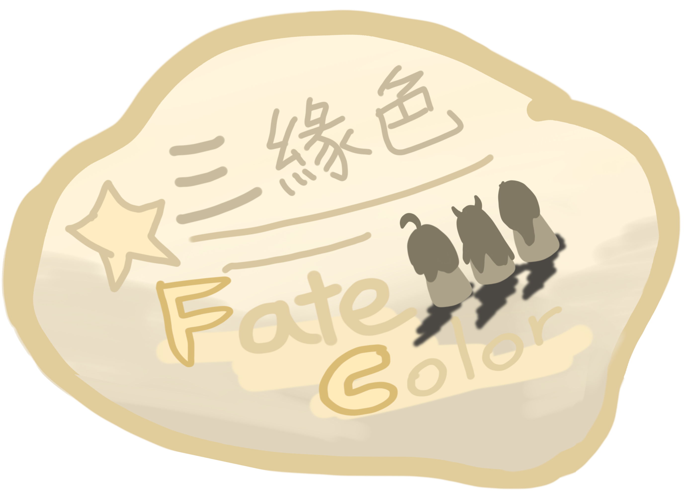
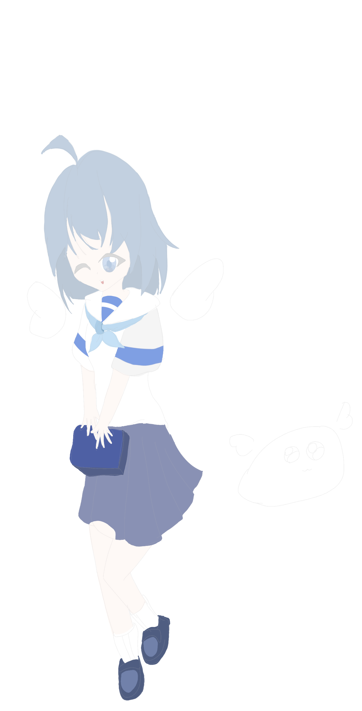
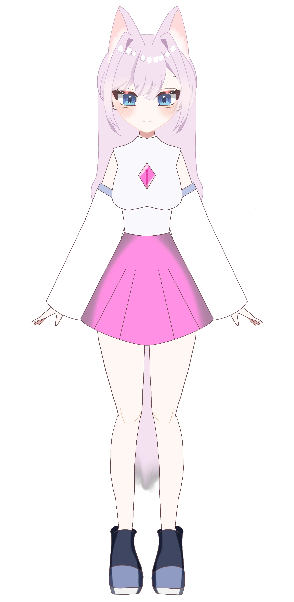

「在緣分中相遇的我們，將編織出只屬於我們的未來，共創只屬於我們的回憶」
集結在學學生創作者，以友情與實力編織的獨立 VTuber 社團。
三緣色（FateColors）是由台灣年輕學生 VTuber 組成的獨立創作社團。在這裡，我們沒有大公司的資金與束縛，也沒有任何收益抽成——我們有的是一群擁有「獨立作業能力」、能互相支援的全能型戰友！
✦
✦ 學生 VTuber 社團：成員們都還在唸書，直播與影片全都擠在放學、週末與寒暑假之間完成。從企劃、繪圖、建模到剪輯，幾乎都是自己來。



三個人、三種顏色、一條線，開啟把奇思妙想變成現實的旅程！